Archivos
Los archivos de Wordpress deben de tener ciertos nombres para que wordpress los detecte, la jerarquia de temas y los nombres de los archivos los puedes ver aquí, mientras algo este más a la derecha es más general
- index.php
- style.css wordpress espera el archivo FUERA DE LA CARPETA CSS así que no lo vayas a meter
- page.php las páginas apareceran aquí, checalo en las jerarquias.
- single.php los post apareceran aquí, checa la página de jerarquia para verificar
Plugins de Visual studio Code para Wordpress
- Wordpress Snippet
- Wordpress Snippets
Tutoriales
FUnciones que existen en WOrdpress
- Usuario logeado: si quieres saber si hay un usuario logeado
- privilegiosSi quieres saber que privilegios tiene un usuario
- Imprimir un menú
- Un logo, imagen ó titulo ya hay una función que hace eso en Wordpress
Nombrar tema de Wordpress
Para nombrar un tema de wordpress lo haces en el archivo style.css de la siguiente manera
Licencias
License: GNU general Public License v2 or later te permite ganar dinero con el tema que compraste, pero lo que no esta permitido es revender el tema, solo tu lo puedes vender
Notas varias
- Para que Wordpress detecte el nombre de tu tema y demás datos, debes de ponerle un comentario con los datos.
- Wordpress recomienda usar esta sintaxis
while (have_posts()):
endwhile; - the_post(); , tiene la información de la base de datos
- Loop se refiere a que consultas la base de datos por medio de un while y te muestra los resultados
- functions.php debes de crear este archivo porque así lo pide wordpress, ahí estarán todas tus funciones
- Prefijos: es necesario que le pongas prefijos a las funciones que crees, por que cada plugin que instales en Wordpress tiene funciones con diferentes nombres y si alguna tiene un nombre igual que alguna función que tu creaste, rompera tu codigo
- Hooks: son más de 4mil en Wordpress y son funciones que corren en determinado tiempo y en determinado lugar. A lo mucho se utilizan 20 ó 30 por proyecto
- __ el doble guión bajo sirve para traducir
- Arreglos asociativos son muy usados para hacer una consulta en Wordpress
- La ventaja es que tendrás muchos tamaños y eso ayuda a que el sitio web sea más rápido
- DOCUMENTACION La documentacion de Wordpress es muy buena
- Conditional Tags Las etiquetas condicionales se pueden utilizar en sus archivos de plantilla para cambiar el contenido que se muestra y cómo se muestra ese contenido en una página en particular
Funciones dentro de Wordpress(se conocen como template_tags)
- have_posts() Consulta la base de datos y revisa si hay algo en ella
- the_post() Tiene la información de la base de datos
- the_title() Te imprime el titulo de tus páginas
- the_content(); Imprime el contenido de tu página
- the_author(); Imprime el autor
- the_date(); Imprime la fecha
- get_header(); encuentra el archivo header en tu proyecto y muestra lo que haya ahí, es como un include 'header.php';
- get_footer(); encuentra el archivo footer en tu proyecto y muestra lo que haya ahí, es como un include 'footer.php';
- get_template_directory_uri(); /img/logo.svg CONSIGUE la ruta de las imagenes pero tienes que poner la carpeta y el nombre de la imagen
- get_sidebar(); encuentra el archivo siderbar en tu proyecto y muestra lo que haya ahí, es como un include 'sidebar.php';
- register_nav_menus() registra los menus, puedes tener cuantos quieras, ejemplo:
function gymfitness_menu(){register_nav_menus(array(//Lo que lee Wordpress| Lo que se va a mostrar en pantalla al usuario | Text Domain (viene en el CSS)
'menu-principal' => __('Menu principal', 'gymfitness')));}add_action('init', 'gymfitness_menu'); - wp_enqueue_style(); Nos permite cargar hojas de estilo y librerias de Javascript, incluso Angular, react y vue
- get_stylesheet_uri() nos permite leer la ubicacion de nuestra hoja de estilos y va a colocar la ruta, incluso cuando compartas el proyecto en otra computadora o lo subas a un servidor
- wp_head(); sirve para activar tu hoja de estilos pero antes debes de poner todo los datos en la funcion wp_enqueue_style();
- get_bloginfo('name') te da el nombre del sitio web
- php the_post_thumbnail(); publica lo que tenga en tu página, sin esto, no aparece nada cuando das click en el menú que te llevará a la publicación que quieres ver, Los tamaños los defines usando
'thumbnail','medium','large', también puedes darle una clase específica a la imagen así
the_post_thumbnail('blog',array('class' => ('imagen-destacada'))); - php get_sidebar(); publica el sidebar en tu template/página
- get_template_part('template-parts/paginas'); sirve como un include de php
- wp_reset_postdata(); se usa después de usar la clase wp_query, es una buena practica, sirve para decirle a Wordpress que puede seguir haciendo las cosas de la manera tradicional en que las hace
- the_field('dias_clase'); sirve para imprimir el campo del plugin advanced custom field 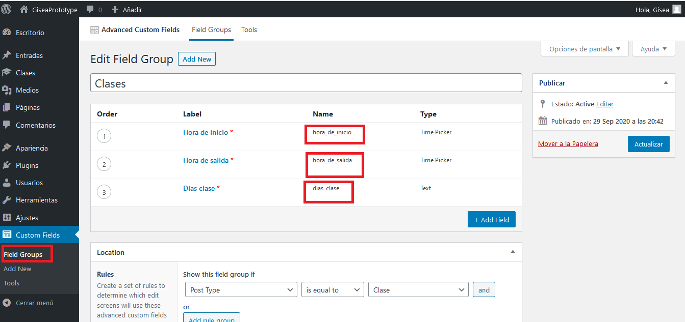
- get_the_title(); sirve para guardar el titulo en una variable, todos los "the_algo" tienen su "get_", ejemplo:
$titulo = get_the_title(); - dynamic_sidebar('sidebar_1'); id sidebar que está en el archivo functions.php
- get_post_gallery()Verifique el contenido de una publicación específica para la galería y, si está presente, devuelve el primero
- get_the_ID() conseguimos el id de las imagenes
- explode() quita el caracter que le digas y lo guarda en un array
- wp_get_attachment_image_src($id,'square') Recupera una imagen para representar un archivo adjunto. Ejemplo:
$imagenThumb = wp_get_attachment_image_src($id,'square')[0]; - the_permalink(); me lleva de un enlace al contenido
- get_the_author_meta('ID') esta es la función que tiene toda la información de un usuario checar, en la sección de "mi perfil" en la parte superior derecha del panel de control, puedes ver tus datos, ahí hay una opción que dice "mostrar este nombre publicamente" y puedes cambiar el nombre con el que se veran los post del administrador, TODOS LOS GET REQUIEREN UN ECHO para mostrarse
- the_time(get_option('date_format')); OBTENER FECHA te pone la fecha del post, get_option es una forma en la que puedes obtener los valores de Wordpress
- get_queried_object(); nos dice la ultima query que se realizo, por eso cuando clickeamos una categoria nos dice cual clickeamos en el titulo
$categoria = get_queried_object(); - get_page_by_title('Nuestras clases') nos retorna cierta información de la página que le indiquemos
- esc_url() sirve para eliminar caracteres de la url, me imagino que se usa por seguridad
- site_url('/') te lleva a la url que le digas
Clases dentro de Wordpress
Hooks
En Wordpress cuando creas una función tienes que agregarle algo llamado on Hook, tiene como 4mil hooks Wordpress y son funciones que corren en determinado tiempo y en determinado lugar. A lo mucho se utilizan 20 ó 30 por proyecto
- add_action('init',); esta funcion corre el hook(el primer parametro), indica que la funcion(que cree) va a correr encuato Wordpress arranque, osea en cuanto visite el sitio web
Instalar Wordpress en ubuntu
- Descargar Xampp e instalarlo con los comandos chmod 755 instalador.exe
- Ejecutarlo con el comando sudo /opt/lampp/lampp start
- Descargar Wordpress y moverlo a la carpeta /opt/lampp/htdocs y desempaquetalo, debes estar como super usuario
- Crear una base de datos para word press en phpMyAdmin
- Ir a localhost/wordpress para empezar la instalacion
- Poner los sig datos: database name, username(root),password(vacio), database host(localhost), y table prefix: wp_
- Elegir site title, username y password
- Probablemente xampp no tenga permisos, así que tengas que crear por consola el archivo wp-config.php
- Copia el codigo que te muestra Wordpress y pegalo en tu archivo wp-config.php dudas: aquí
Instalar Wordpress con Local by FlyWheel en WIndows
- Instalar Local by FlyWheel
- Ponerle nombre en: what's your site name?
- En las opciones avanzadas puedes ver local site domain: gymfitness.local y path: localsites/gymFitness, ya están por default
- Click en prefered
- Agregar datos por default como:
- wordpress usernsme: ric
- wordpress password: 123
- wordpress email : dev-email@flywheel.local
- Ya instalado, en el boton de admin, inicias sesion en wordpress para el panel de administracion
- Instalar y activar Disable Gutenberg
Cosas importantes que hacer en Wordpress
- Poner de inicio una pagina Ajustes>lectura: Una cosa es definir el espacio en el que estara el menú y como se va llamar, otra es crearlo, otra es asignarlo y la última es, donde se va a ver.
-
Crear la seccioin de menpu en Wordpress , crear el archivo de functions.php y agregar esto:
function aquapro_menus(){register_nav_menus(array('menu-principal' => __('Menu Principal','AquaPro')));}add_action('init','aquapro_menus'); -
El bucle de Worpress para mostrar comentarios y publicaciones de la Base de datos
< ><?php while ( have_posts()): the_post(); ?>>h1> <?php the_title(); ?> >/h1><?php the_content(); ?><?php endwhile; ?> -
Agregar una libreria
function gisea_prototype_scripts_style(){wp_enqueue_style('normalize',get_template_directory_uri() . '/css/normalize.css',array(),'8.0.1');}add_action('wp_enqueue_scripts','gisea_prototype_scripts_style'); - wp_footer(); te crea la barra de menú del header donde puedes ir al panel de control o al sitio y viceversa 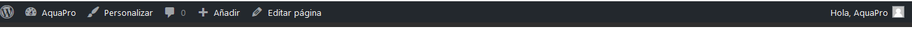
- Wordpress trae por default varias librerias de js y hasta frameworks como backbone.js
- Cambiar el titulo Ajustes>generales
-
Poner imagenes para adjuntarlas en las publicaciones de las páginas
Pero para que se publique debes poner en el archivo page.php
Los tamaños los defines usando 'thumbnail','medium','large'function gisea_prototype_setup(){//Habilitar imágenes destacadas
add_theme_support('post-thumbnails');}add_action('after_setup_theme','gisea_prototype_setup'); - regenerar imagenes Herramientas>Regenerate Thumbnails>presionar primer boton, para que te de todos los tamaños de imagenes que hayas puesto en tu archivo functions.php ese plugin, todas las imagenes que ya hayas subido pero no tengan ese tamaño, La ventaja es que tendrás muchos tamaños y eso ayuda a que el sitio web sea más rápido
-
usando este codigo y crearas otro archivo que su nombre comience con page ejemplo page-no-sidebar.php
< >/** Template Name: Contenido Centrado (No Sidebars)*/get_header(); ?><main class="contenedor pagina seccion no-sidebar"><div class="contenido-principal"><?php while ( have_posts() ): the_post(); ?><h1 class="text-center texto-primario"> <?php the_title(); ?> </h1>//el array hace que le des una clase específica a esa imagen destacada<?php the_post_thumbnail('blog',array('class' => ('imagen-destacada'))); ?><?php the_content(); ?><?php endwhile; ?></div></main><?php get_footer(); ?> - Activar slug cuando esta en el panel de control de Wordpress en una página, en la parte superior que dice opciones de pantalla presionas slug y te mostrara en la parte inferior un pequeño formulario que sirve para modificar el nombre del link con el que se vera la url de la página, también si creas un archivo con el nombre page-nuestras-clases.php la pagina usara ese archivo 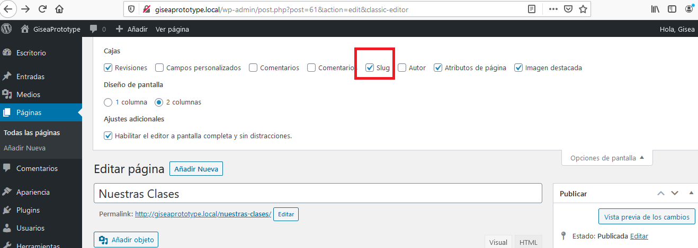 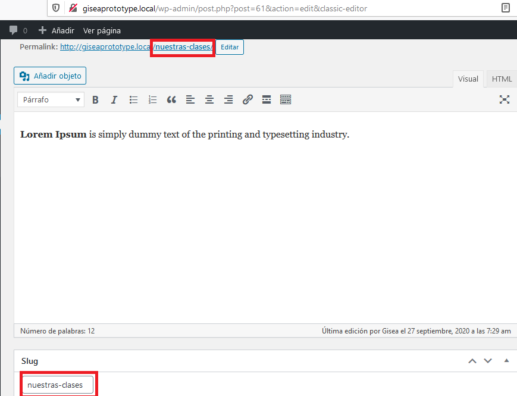
- Custom Post Types ¿Qúe son los Post types? Wordpress almacena los diferentes tipos de contenido y los agrupa en algo llamado post types, cada entrada de blog se le conoce como post y su post type
se le conoce como posts.
actualmente en wordpress hay 7 Post Types, tambiém puedes crear los tuyos. Existe 7 tipos de post:
- post: las entradas de blog
- pages: también tienen su propio post type
- attachments: fotos y video
- menus: los menus de navegacion también se almacenan
- revisiones: todos los cambios que se van haciendo en una entrada del blog
- css el css personalizado
- Changesets similar a una revision pero del customizr, el customizr almacena los cambios para que puedas revertilos, similar a git
- Mejor orden en el area de administración
- Un Post Type personalizado también tendrá acceso a los template files y funciones, es algo que tu creas pero que hereda toda la funcionalidad de wordpress
- Puedes crear consultas personalizadas en tus post types
- El codigo de un post type, se crea en un theme o en un plugin, las buenas practicas dicen que debe de ir en la carpeta de plugin, toda funcionalidad debe de ir en la carpeta de plugin
- Como crear un POST TYPE:
- Ir a la carpeta de plugins y crear una carpeta con el prefijo de tu tema
- Crear dentro de la carpeta que creaste un archivo .php con el mismo nombre de la carpeta
- Referencia
- Iconos de Wordpress
- Agregar este codigo cambia el titulo y el nombre de la funcion, que sea corto y que la funcion coincida con el hook, dejo una imagen para que veas comentarios porque ya me dió hueva escribir 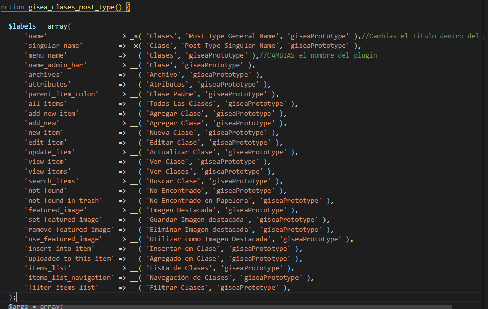 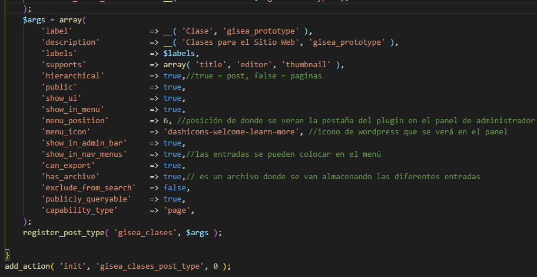
- Agregar el codigo de seguridad para que nadie pueda acceder a los archivos del plugin
- Puedes agregar cuantos post types quieras, solo cambiales el nombre
- Al terminar debes ir a Ajustes>enlaces permanentes>Guardar cambios
- Esto al final te crea una opción en el panel de control 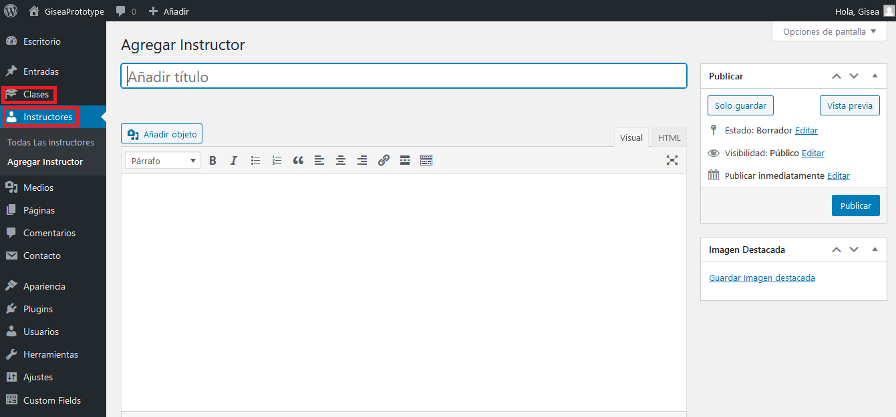
- DOCUMENTACION La documentacion de Wordpress es muy buena
-
Activando Widgetsson sidebars para mantener al usuario dentro del sitio(enviciarlos), puedes configurarlos y puedes poner el número de sitebars que quieras. El siderbar 1 se muestra en las entradas y el sidebar 2 en las clases
< >
function gisea_prototype_widgets(){//El widget se registra con esta función porque nunca se le cambió el nombre
register_sidebar(array('name' => 'Sidebar 1',//Nombre que se verá en el panel de administración'id' => 'sidebar_1',//la manera en la que Wordpress reconoce el widget'before_widget' => '<div class="widget">',//Contenido que vendrá antes del widget'after_widget' => '</div>','before_title' => '<h3>','after_title' => '</h3>'
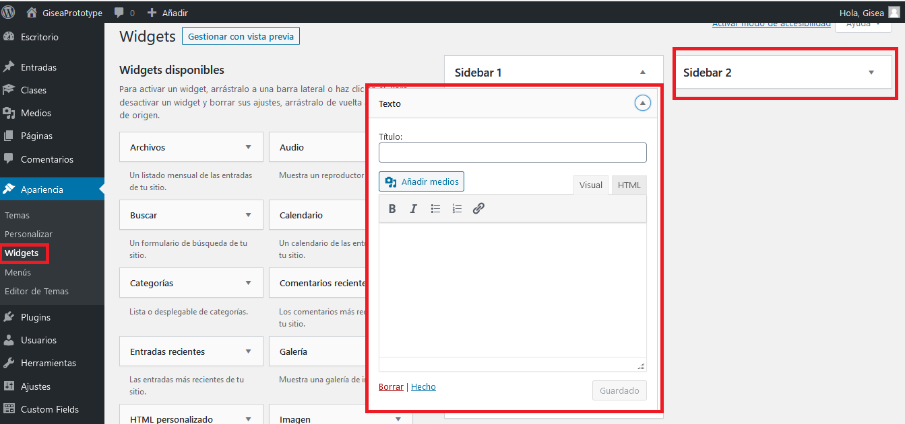)); - agregar un formulario en el widget, ir al archivo gisea_widgets.php
- Agregar una galeria ir al archivo page-no-sidebar.php y copiar el codigo
- Cambiar tu nombre en los post "mi perfil" en la parte superior derecha del panel de control, puedes ver tus datos, ahí hay una opción que dice "mostrar este nombre publicamente" y puedes cambiar el nombre con el que se veran los post del administrador
- agregar la seccion de blog crear el home.php y copiar el codigo, también crear category.php y loop-blog.php en la carpeta template-parts
- Soporte seo Poner
add_theme_support('title-tag');en functions.php -
Crear un shortcode ejemplo:
[foobar]
Agregar tipografias
function gisea_prototype_scripts_style(){
wp_enqueue_style('googleFont','https://fonts.googleapis.com/css2?family=Open+Sans:wght@400;700&family=Raleway:wght@400;700;900&family=Staatliches&display=swap"',array(),'1.0.0');
}
add_action('wp_enqueue_scripts','gisea_prototype_scripts_style');
Pluggins importantes de Wordpress
- Regenerate Thumbnails para que te de todos los tamaños de imagenes ese plugin, todas las imagenes que ya hayas subido pero no tengan ese tamaño, La ventaja es que tendrás muchos tamaño y eso ayuda a que el sitio web sea más rápido
- Advanced custom fields: sirve para generar campos personalizados en la publicación que vayas a hacer
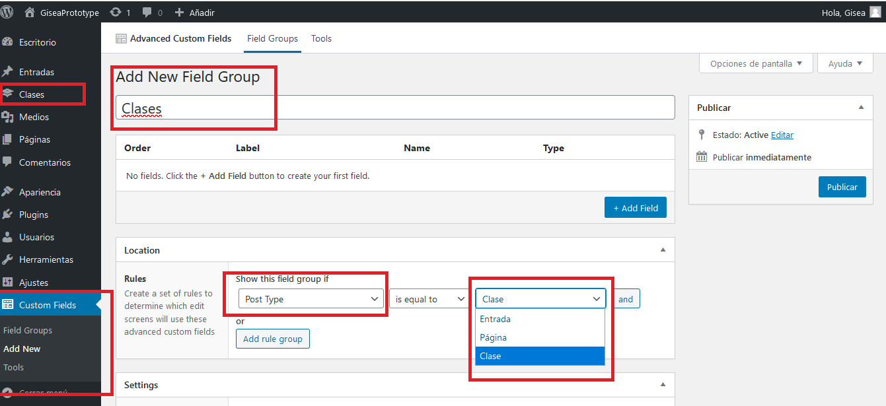
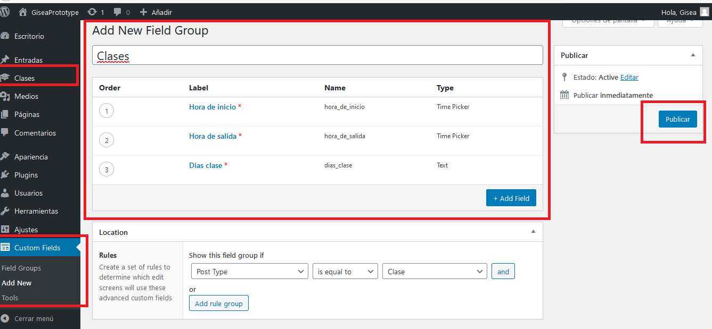

- Contact Form 7 para crear formularios, solo copias el mini-codigo y lo pegas en tu página de contacto, puedes personalizar el formulario usando las mismas clases y etiquetas que crea el plugin
- Advanced Custom Fields: Leaflet Map Field paraponer un mapa 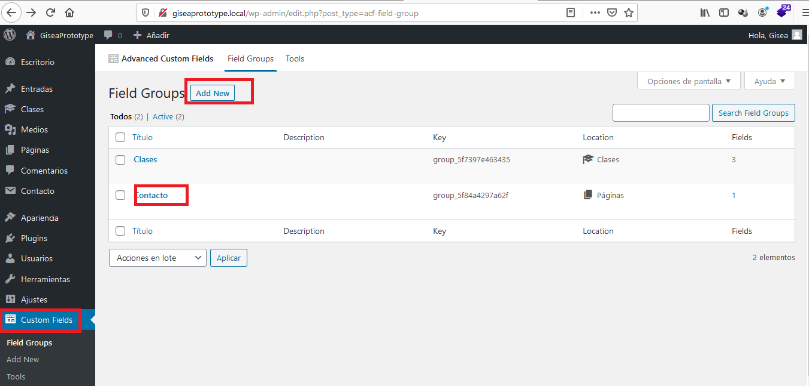 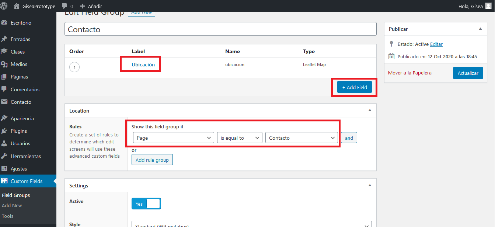 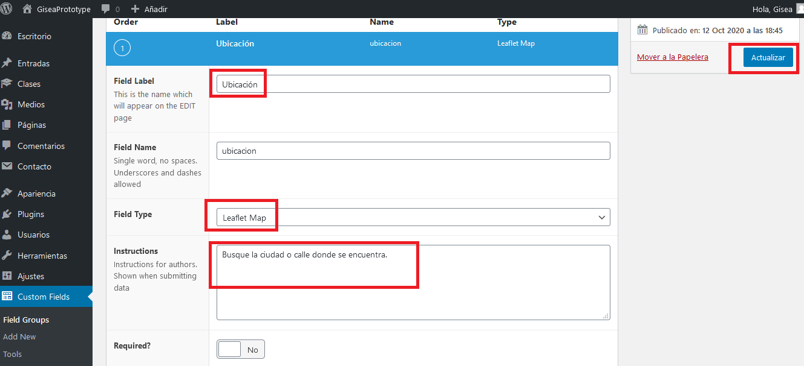
Links importantes
- wpacademia
- multilingualpress pluggin que traduce
- Esther Sola
- zonadpw
- Tema conocido pero en Wordpress
- tranquilidadwp
- silocreativo Los que crean temas de wordpress bien calificados
- ohyeahdev La empresa del español pueblerino
- nbadiola
- wplive entrevistas mamalonas de Wordpress
Notas curiosas
- Los valores boleanos true y false regresan los valores 1 y false no lo va a imprimir
- En una condicional, si ninguna opción es valida, siempre toma la última
- =! significa no es igual
-
Dentro de const no puedes utilizar variables ni funciones pero dentro de define si puedes utilizar variables y funciones
$path= 'cursoPHP/index.php';define('PATH',$path);echo PATH1;define('PATH2',mt_rand());echo PATH2; -
Forzar tipo de datos
$price = 11.2;$price=(int)$price;echo var_dump($price);//se puede usar bool,int,double
- INTERPOLACIONEs poner una variable dentro de las comillas en un echo
-
Llaves en una variable: Sirven para no escribas mal la variable
$var = "codigo";echo "Hola {$var} facilito"; - name el name en php es lo que te hace acceder a los datos
- PHP no sirve para big data ni machine learning aunque existan librerías para eso
- PHP standars recommendation
- seguir con un mismo profesor porque se te facilita con el
Errores en PHP
- El "tipo" de error , que siempre está al principio
- El mensaje de error, nos proporciona una pista sobre el error
- El contesto del error, nos dice donde ocurrio
Los errores de PHP tienen 3 partes
Los mensajes de error más populares
- Parse error: se genera solo en tiempo de compilación
- Fatal error: envia un mensaje de advertencia y detiene la ejecución
- Warning: envia un mensaje de advertencia sin detener la ejecución , a diferencia de error fatal
- Notices: Aviso en tiempo de ejecución, aviso o nota de sugerencia, detalles vaya, nos indica cual fue el error pero se muestra un parte del resultado, en notices no se detiene la ejecución
Consejos
- var_dump/print_r/etiqueta pre son tus mejores aliados al trabajar con arreglos
- while es el bucle más usado en Wordpress
Funciones de php muy usadas
- array_push($frutas,"pera"); agrega un elemento a tu array
- unset($frutas[0]); te elimina la posicion del melón en el array, también elimina variables
- concatenar usando el punto.
- Arreglos asociativos son muy usados para hacer una consulta en Wordpress
- var_dump vs print_r ambos te imprimen el arreglo pero var_dump te dice que tipo de dato tiene el arreglo y POSICION
- var_dump con array normal te dice POSICION, tipo de dato y número de caracteres, con array_asociativo te dice el tipo de dato, nombre y contenido de cada casilla del array asociativo
- isset($var) Determina si una variable está definida y no es NULL
- array_rand($elArray) Sacar un dato aleatorio del array
$caja = array('Perro','Gato','Ratón','Perico');
$indice = array_rand($caja); - gettype();Te indica que tipo de valor es la variable
- round(7.435,2) redondea un número y te le puedes indicar cuantos decimales quieres que redonde
- is_string(); Comprueba si la variable es una cadena de texto
- is_float();Comprueba si la variable es un número flotante
- trim(); Quita los espacios al principio y al final
- empty(); Checa si la variable tiene contenido
- strlen($variable); Cuenta los caracteres que hay en la variable
- strpos($var,"palabra"); Busca donde esta una palabra dentro de una frase que es una cadena de texto
- str_replace(palabra que reemplazaras, palabra nueva, $variable); reemplaza una variable
$vowels = array("a", "e", "i", "o", "u", "A", "E", "I", "O", "U");
$onlyconsonants = str_replace($vowels, "", "Hello World of PHP");
echo $onlyconsonants; - strtolower(); pone todas las palabras del string en minusculas
- strtoupper(); Pone todas las palabras del string en mayúsculas
- ceil(12.001) redondea hacia arriba
- intval($var)= tranforma tu dato a entero
- boolval()= tranforma tu dato a boleano
- floatval() = tranforma tu dato a flotante
- strval() = tranforma tu dato a string
- substr("Marines Mendez Gallegos",8,6) = te extrae texti de una cadena de texto 6 casillas a partir de la posicion 8, imprime Mendez, los acentos cuentan como caracter y si usas -8, te agarra los valores empezando desde el final
-
preg_match($var2,$var1)//Te pone 1 si encuentra una coincidencia y 0 si no
$var1= "Hola mundo";$var2= "/Hola/";checar documentacion
-
sprintf($arg1,$arg2,$text);, remmplaza %s por los datos que le pongas, checa documentacion
$arg1=1994;$arg2="php";$text="En %s fue creado %s"; -
echo preg_match_all($var2,$var1,$match)//Te devuelve un arreglo con lo que encontro$var1 = 'Los numeros son 1 4 5 6';$var2 = '/[0-9]/';print_t($matches);CHECAR DOCUMENTACIÓN//Puedes usarla para fechas y "\" este signo sirve por si no agarrar caracteres
Lo aprendi en codigo facilito capítulo PCRE
Funciones usadas pero no tanto
- date(d-m-Y); Checar los formatos
- sqrt(); Saca la raiz cuadrada
- rand(10,40); Genera un número aleatorio entre 2 cifras
- pi(); genera el 3.1416
- esc_attr() Esa función es necesaria cuando vas a recibir datos que provengan del cliente, generalmente se usa para filtrar o prevenir que no se envíe código de JavaScript ni ningún tipo de inyección de código. Siempre se usa cuando se escapan atributos HTML (especialmente valores de formulario) como alt, value, title, src, etc.
funciones para arrays
- asort: te ordena el array alfabeticamente
- arsort($nombres); ordena el array de manera inversa
- sort: nos ordena un array numerico
- array_push($elArray,$agregar): AGREGA un elemento al array
- array_pop($elArray): te ELIMINA el último elemento del array
- array_rand($elArray): te SELECCIONA un elemento aleatoriamente
- array_reverse($numeros): imprime el orden inverso de un array de números
- array_search('Hola',$elArray): busca dentro del array y te dice el indice en el que se encuentra
- count($elArray): me dice el número de elementos que tiene mi array
- sizeof($elArray): lo mismo que la función count
Funciones ruta
- PATHINFO_BASENAME: da el nombre del archivo con su extension
- pathinfo('documento.txt', PATHINFO_BASENAME);
- PATHINFO_DIRNAME te da el nombre de la carpeta o las carpetas donde está tu archivo
- PATHINFO_EXTENSION: Te da la extensión de tu archivo
- PATHINFO_FILENAME: Nos devuelve el nombre del documento
- $resultados = glob('*.php'); Nos permite buscar archivos dentro de una carpeta con la extensión que queramos
- GLOB_BRACE: te permite poner varias extensiones,OJO no pongas espacios entre las extensiones, Es muy útil para las imágenes y gif,
$resultados = glob('*.{php,txt,html}',GLOB_BRACE);, también te permite buscar entre carpetas, OJO, pon bien los slash y nombre de carpetas,$resultados = glob('practicas/sesiones/*.{php,txt}', GLOB_BRACE); print_r($resultados); - basename: elimina toda la ruta de tu archivo y como segundo parametro también podemos eliminar el parametro
echo basename('carpeta1/carpeta2/archivo.php','.php'); - dirname:te devuelve la ruta de donde está tu archvo